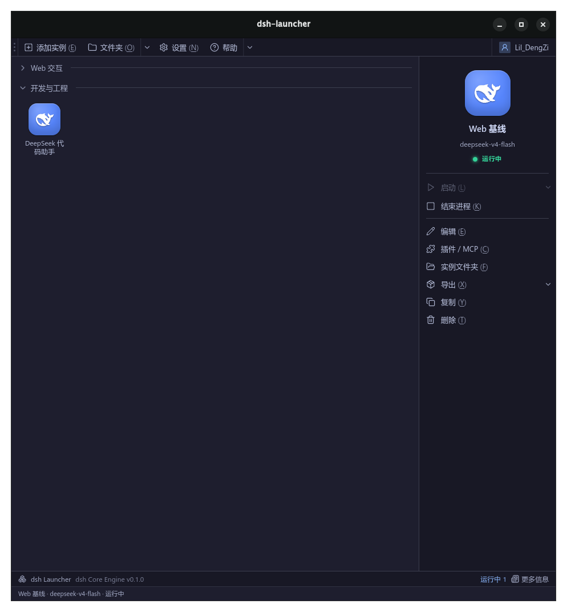
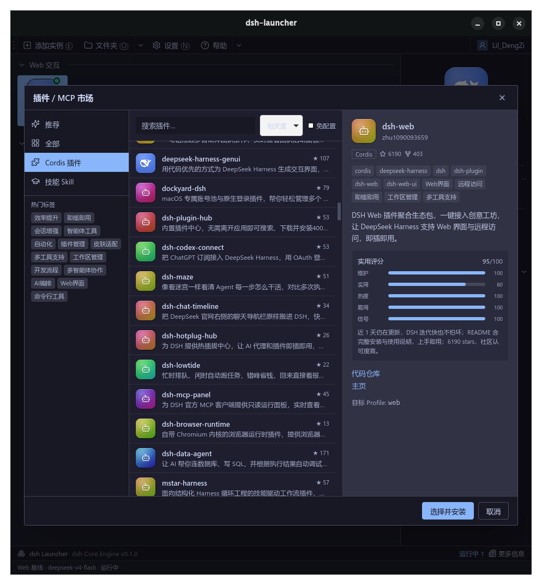
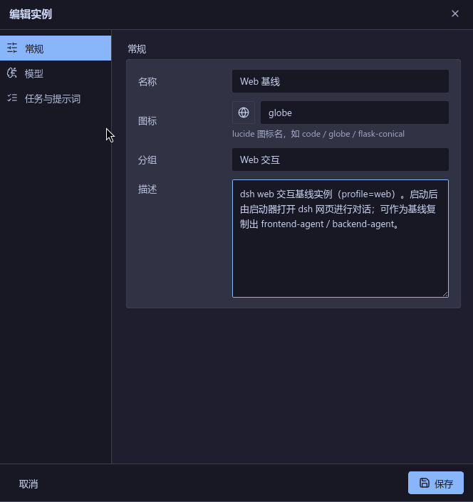

<title>agentLauncher</title>
<link rel="preconnect" href="https://fonts.googleapis.com">
<link rel="preconnect" href="https://fonts.gstatic.com" crossorigin>
<link rel="stylesheet" href="https://fonts.googleapis.com/css2?family=Archivo:wght@500;600;700;800;900&family=IBM+Plex+Mono:wght@400;500;600&family=IBM+Plex+Sans:wght@400;500;600&family=Noto+Sans+SC:wght@400;500;700&display=swap">
<style>
/* ---------- tokens ---------- */
:root{
  --ink:#0b0e14; --surface:#ffffff; --surface-2:#eef1f7; --raise:#f7f9fc;
  --border:#d7dee9; --border-soft:#e6ebf3;
  --text:#111826; --muted:#54627a; --faint:#8794a8;
  --iris:#2f6df0; --iris-soft:#dbe6ff;
  --live:#0f9d76;
  --v:#7c5cff; --c:#0bb4c7; --m:#12b886; --a:#e8963a; --r:#e5568c;
  --ground:#f4f6fb; --card:#ffffff;
  --shadow:0 1px 2px rgba(16,24,40,.06),0 12px 32px -12px rgba(16,24,40,.18);
  --maxw:1180px;
}
@media (prefers-color-scheme: dark){
  :root:not([data-theme="light"]){
  --ink:#070910; --surface:#141a24; --surface-2:#1b2330; --raise:#10151e;
  --border:#26303f; --border-soft:#1e2734;
  --text:#e8ecf3; --muted:#93a2b8; --faint:#63718a;
  --iris:#5b9dff; --iris-soft:#16233b;
  --live:#3fe3b0;
  --v:#a78bfa; --c:#38e0d0; --m:#4fe3a8; --a:#ffc24b; --r:#ff7aa8;
  --ground:#0b0e14; --card:#141a24;
  --shadow:0 1px 2px rgba(0,0,0,.4),0 20px 50px -20px rgba(0,0,0,.6);
  }
}
:root[data-theme="dark"]{
  --ink:#070910; --surface:#141a24; --surface-2:#1b2330; --raise:#10151e;
  --border:#26303f; --border-soft:#1e2734;
  --text:#e8ecf3; --muted:#93a2b8; --faint:#63718a;
  --iris:#5b9dff; --iris-soft:#16233b;
  --live:#3fe3b0;
  --v:#a78bfa; --c:#38e0d0; --m:#4fe3a8; --a:#ffc24b; --r:#ff7aa8;
  --ground:#0b0e14; --card:#141a24;
  --shadow:0 1px 2px rgba(0,0,0,.4),0 20px 50px -20px rgba(0,0,0,.6);
}
/* ---------- base ---------- */
*{box-sizing:border-box}
html{scroll-behavior:smooth}
@media (prefers-reduced-motion:reduce){html{scroll-behavior:auto}}
body{
  margin:0; background:var(--ground); color:var(--text);
  font-family:"IBM Plex Sans","Noto Sans SC",system-ui,sans-serif;
  font-size:17px; line-height:1.65; -webkit-font-smoothing:antialiased;
}
h1,h2,h3{font-family:"Archivo","Noto Sans SC",system-ui,sans-serif;
  text-wrap:balance; letter-spacing:-.02em; line-height:1.06; margin:0;}
p{margin:0}
a{color:inherit;text-decoration:none}
.mono{font-family:"IBM Plex Mono","Noto Sans SC",ui-monospace,monospace}
.wrap{max-width:var(--maxw);margin-inline:auto;padding-inline:24px}
.eyebrow{font-family:"IBM Plex Mono",monospace;font-size:12px;font-weight:600;
  letter-spacing:.22em;text-transform:uppercase;color:var(--iris)}
.muted{color:var(--muted)}
section{position:relative}
/* language toggle visibility */
.lang-en{display:none}
:root[data-lang="en"] .lang-en{display:revert}
:root[data-lang="en"] .lang-zh{display:none}
/* ---------- nav ---------- */
nav{position:sticky;top:0;z-index:50;backdrop-filter:blur(12px);
  background:color-mix(in srgb,var(--ground) 82%,transparent);
  border-bottom:1px solid var(--border-soft)}
.nav-in{display:flex;align-items:center;gap:20px;height:60px}
.brand{display:flex;align-items:center;gap:10px;font-family:"Archivo";
  font-weight:800;font-size:18px;letter-spacing:-.02em}
.brand .dot{width:11px;height:11px;border-radius:3px;
  background:conic-gradient(from 210deg,var(--v),var(--c),var(--m),var(--a),var(--r),var(--v))}
.nav-sp{flex:1}
.nav-links{display:flex;gap:22px;font-size:14px;color:var(--muted)}
.nav-links a:hover{color:var(--text)}
@media(max-width:720px){.nav-links{display:none}}
.tog{display:inline-flex;align-items:center;gap:6px;border:1px solid var(--border);
  background:var(--surface);color:var(--muted);border-radius:8px;padding:6px 10px;
  font-family:"IBM Plex Mono",monospace;font-size:12px;font-weight:600;cursor:pointer}
.tog:hover{color:var(--text);border-color:var(--iris)}
/* ---------- hero ---------- */
.hero{position:relative;overflow:hidden;border-bottom:1px solid var(--border-soft)}
#prism{position:absolute;inset:0;width:100%;height:100%;opacity:.9}
.hero-grid{position:relative;display:grid;grid-template-columns:1.05fr .95fr;
  gap:40px;align-items:center;padding:88px 0 96px}
@media(max-width:900px){.hero-grid{grid-template-columns:1fr;padding:64px 0 72px}}
.hero h1{font-size:clamp(38px,6vw,68px);font-weight:900}
.hero h1 .spec{background:linear-gradient(100deg,var(--v),var(--c) 40%,var(--m) 62%,var(--a) 82%,var(--r));
  -webkit-background-clip:text;background-clip:text;color:transparent}
.lede{font-size:clamp(17px,2vw,20px);color:var(--muted);margin-top:22px;max-width:34ch}
.cta-row{display:flex;flex-wrap:wrap;gap:14px;margin-top:34px}
.btn{display:inline-flex;align-items:center;gap:9px;border-radius:11px;
  padding:13px 22px;font-weight:600;font-size:15px;cursor:pointer;border:1px solid transparent;
  transition:transform .15s ease,box-shadow .2s ease}
.btn:hover{transform:translateY(-2px)}
.btn-primary{background:var(--iris);color:#fff;box-shadow:0 8px 24px -8px var(--iris)}
.btn-ghost{background:var(--surface);border-color:var(--border);color:var(--text)}
.btn-ghost:hover{border-color:var(--iris)}
.cmd{margin-top:26px;display:inline-flex;align-items:center;gap:12px;
  background:var(--raise);border:1px solid var(--border);border-radius:10px;
  padding:11px 15px;font-size:13.5px;color:var(--text)}
.cmd .pmt{color:var(--iris)}
.cmd .cp{margin-left:4px;color:var(--faint);cursor:pointer;font-size:11px;
  border:1px solid var(--border);border-radius:6px;padding:3px 7px}
.cmd .cp:hover{color:var(--iris);border-color:var(--iris)}
/* prism side card */
.hero-vis{position:relative;min-height:340px}
/* ---------- section frame ---------- */
.sec{padding:84px 0}
.sec-head{max-width:60ch;margin-bottom:48px}
.sec-head h2{font-size:clamp(28px,4vw,42px);font-weight:800;margin-top:14px}
.sec-head p{color:var(--muted);margin-top:16px;font-size:18px}
.reveal{opacity:0;transform:translateY(18px);transition:opacity .7s ease,transform .7s ease}
.reveal.in{opacity:1;transform:none}
@media (prefers-reduced-motion:reduce){.reveal{opacity:1;transform:none;transition:none}}
/* positioning strip */
.strip{border-block:1px solid var(--border-soft);background:var(--surface)}
.strip-in{display:grid;grid-template-columns:repeat(3,1fr);gap:0;text-align:center}
@media(max-width:760px){.strip-in{grid-template-columns:1fr;text-align:left}}
.strip-cell{padding:34px 26px}
.strip-cell + .strip-cell{border-left:1px solid var(--border-soft)}
@media(max-width:760px){.strip-cell + .strip-cell{border-left:0;border-top:1px solid var(--border-soft)}}
.strip-cell .k{font-family:"Archivo";font-weight:900;font-size:34px;letter-spacing:-.03em}
.strip-cell .l{color:var(--muted);font-size:14px;margin-top:6px}
/* ---------- dashboard illustration ---------- */
.shot{border:1px solid var(--border);border-radius:16px;overflow:hidden;
  box-shadow:var(--shadow);background:var(--card)}
.shot-bar{display:flex;align-items:center;gap:8px;padding:11px 16px;
  border-bottom:1px solid var(--border-soft);background:var(--surface-2)}
.tl{width:11px;height:11px;border-radius:50%}
.shot-title{margin-left:10px;font-size:12.5px;color:var(--muted)}
.shot-img{display:block;width:100%;height:auto}
.gallery{display:grid;grid-template-columns:1fr 1fr;gap:22px;margin-top:34px}
@media(max-width:820px){.gallery{grid-template-columns:1fr}}
.gshot{margin:0}
.gshot .figcap{margin-top:12px;text-align:left}
.dash{display:grid;grid-template-columns:1fr 232px;min-height:400px}
@media(max-width:820px){.dash{grid-template-columns:1fr}}
.dash-main{padding:20px 22px}
.grp{font-family:"IBM Plex Mono";font-size:12px;letter-spacing:.08em;color:var(--faint);
  text-transform:uppercase;margin:8px 0 14px;display:flex;align-items:center;gap:8px}
.grp::before{content:"▸";color:var(--iris)}
.cards{display:grid;grid-template-columns:repeat(auto-fill,minmax(120px,1fr));gap:14px;margin-bottom:26px}
.icard{border:1px solid var(--border-soft);border-radius:11px;padding:14px 12px;
  background:var(--raise);text-align:center;transition:border-color .2s,transform .2s}
.icard:hover{border-color:var(--iris);transform:translateY(-3px)}
.icard.sel{border-color:var(--iris);background:var(--iris-soft)}
.ico{width:46px;height:46px;border-radius:12px;margin:0 auto 10px;display:grid;place-items:center;
  font-size:22px;color:#fff}
.icard .nm{font-size:13px;font-weight:600;line-height:1.3}
.icard .sub{font-size:11px;color:var(--faint);font-family:"IBM Plex Mono";margin-top:3px}
.dash-side{border-left:1px solid var(--border-soft);background:var(--surface-2);padding:20px 16px}
@media(max-width:820px){.dash-side{border-left:0;border-top:1px solid var(--border-soft)}}
.side-av{width:60px;height:60px;border-radius:14px;margin:2px auto 12px;display:grid;place-items:center;
  font-size:28px;color:#fff;background:linear-gradient(140deg,var(--iris),var(--v))}
.side-nm{text-align:center;font-weight:700;font-size:15px}
.side-meta{text-align:center;font-size:11px;color:var(--faint);font-family:"IBM Plex Mono";margin-top:3px;margin-bottom:16px}
.actbtn{display:flex;align-items:center;gap:9px;width:100%;border:1px solid var(--border-soft);
  background:var(--card);border-radius:9px;padding:9px 12px;font-size:13px;margin-bottom:8px;color:var(--text)}
.actbtn.play{background:var(--iris);color:#fff;border-color:var(--iris);font-weight:600}
.actbtn svg{width:15px;height:15px;flex:none}
.shot-status{display:flex;align-items:center;gap:9px;padding:9px 16px;border-top:1px solid var(--border-soft);
  background:var(--surface-2);font-family:"IBM Plex Mono";font-size:11.5px;color:var(--muted)}
.live-dot{width:8px;height:8px;border-radius:50%;background:var(--live);box-shadow:0 0 0 4px color-mix(in srgb,var(--live) 25%,transparent)}
.figcap{margin-top:14px;font-size:13px;color:var(--faint);text-align:center;font-family:"IBM Plex Mono"}
/* ---------- features ---------- */
.feat{display:grid;grid-template-columns:repeat(3,1fr);gap:18px}
@media(max-width:900px){.feat{grid-template-columns:repeat(2,1fr)}}
@media(max-width:600px){.feat{grid-template-columns:1fr}}
.fcard{border:1px solid var(--border);border-radius:15px;padding:26px 24px;background:var(--card);
  transition:border-color .2s,transform .2s}
.fcard:hover{border-color:var(--iris);transform:translateY(-4px)}
.fic{width:44px;height:44px;border-radius:12px;display:grid;place-items:center;margin-bottom:18px;
  background:var(--iris-soft);color:var(--iris)}
.fic svg{width:22px;height:22px}
.fcard h3{font-size:19px;font-weight:700;font-family:"IBM Plex Sans","Noto Sans SC"}
.fcard p{color:var(--muted);font-size:15px;margin-top:9px;line-height:1.6}
/* ---------- anatomy tree ---------- */
.anat{display:grid;grid-template-columns:.95fr 1.05fr;gap:44px;align-items:center}
@media(max-width:860px){.anat{grid-template-columns:1fr;gap:28px}}
.tree{background:var(--raise);border:1px solid var(--border);border-radius:15px;
  padding:24px 22px;font-family:"IBM Plex Mono";font-size:13.5px;line-height:1.95;overflow-x:auto;box-shadow:var(--shadow);white-space:pre}
.tree .d{color:var(--iris);font-weight:600}
.tree .c{color:var(--faint)}
.tree .root{color:var(--text);font-weight:600}
.alist{list-style:none;padding:0;margin:0;display:flex;flex-direction:column;gap:16px}
.alist li{padding-left:18px;border-left:2px solid var(--border);position:relative}
.alist li b{font-family:"IBM Plex Mono";font-size:14px;color:var(--text);font-weight:600}
.alist li span{display:block;color:var(--muted);font-size:14.5px;margin-top:3px}
/* ---------- how / steps ---------- */
.flow{display:grid;grid-template-columns:repeat(3,1fr);gap:20px}
@media(max-width:820px){.flow{grid-template-columns:1fr}}
.step{border:1px solid var(--border);border-radius:15px;padding:26px 24px;background:var(--card);position:relative}
.step .n{font-family:"IBM Plex Mono";font-weight:600;font-size:13px;color:var(--iris);letter-spacing:.1em}
.step h3{font-size:18px;margin:10px 0 8px;font-family:"IBM Plex Sans","Noto Sans SC"}
.step p{color:var(--muted);font-size:14.5px;line-height:1.6}
.step .cli{margin-top:14px;font-family:"IBM Plex Mono";font-size:12.5px;color:var(--text);
  background:var(--raise);border:1px solid var(--border-soft);border-radius:8px;padding:9px 11px;overflow-x:auto}
/* ---------- quick start ---------- */
.start-wrap{display:grid;grid-template-columns:1fr 1fr;gap:40px;align-items:start}
@media(max-width:820px){.start-wrap{grid-template-columns:1fr;gap:26px}}
.terminal{background:#0a0d13;border:1px solid #222c3b;border-radius:14px;overflow:hidden;box-shadow:var(--shadow)}
.term-bar{display:flex;gap:7px;padding:11px 15px;background:#111722;border-bottom:1px solid #222c3b}
.term-body{padding:20px 20px;font-family:"IBM Plex Mono";font-size:13.5px;line-height:2;color:#c9d4e6;overflow-x:auto;white-space:pre-wrap}
.term-body .p{color:#5b9dff}
.term-body .co{color:#5a6678}
.term-body .ok{color:#3fe3b0}
.chk{list-style:none;padding:0;margin:0;display:flex;flex-direction:column;gap:14px}
.chk li{display:flex;gap:13px;align-items:flex-start}
.chk .b{flex:none;width:24px;height:24px;border-radius:7px;background:var(--iris-soft);color:var(--iris);
  display:grid;place-items:center;font-size:13px;font-weight:700;font-family:"IBM Plex Mono"}
.chk b{font-weight:600}
.chk p{color:var(--muted);font-size:14.5px;margin-top:2px}
.note{margin-top:20px;font-size:13.5px;color:var(--faint);border-left:2px solid var(--a);padding-left:14px}
/* ---------- footer ---------- */
footer{border-top:1px solid var(--border-soft);background:var(--surface);padding:52px 0 60px}
.foot-in{display:flex;flex-wrap:wrap;gap:24px;justify-content:space-between;align-items:flex-end}
.foot-tag{color:var(--muted);font-size:14px;max-width:40ch;margin-top:10px}
.stackline{font-family:"IBM Plex Mono";font-size:12.5px;color:var(--faint);letter-spacing:.02em}
.pill{display:inline-flex;align-items:center;gap:7px;font-family:"IBM Plex Mono";font-size:11.5px;
  border:1px solid var(--border);border-radius:999px;padding:5px 12px;color:var(--muted)}
.badges{display:flex;flex-wrap:wrap;gap:9px;margin-top:16px}
/* focus + misc */
:focus-visible{outline:2px solid var(--iris);outline-offset:2px;border-radius:4px}
.spectrum-rule{height:3px;border:0;border-radius:2px;width:64px;
  background:linear-gradient(90deg,var(--v),var(--c),var(--m),var(--a),var(--r))}
</style>

<nav>
  <div class="wrap nav-in">
    <a class="brand" href="#top"><span class="dot"></span>dsh<span style="color:var(--iris)">▸</span>launcher</a>
    <div class="nav-sp"></div>
    <div class="nav-links">
      <a href="#what"><span class="lang-zh">理念</span><span class="lang-en">Concept</span></a>
      <a href="#features"><span class="lang-zh">能力</span><span class="lang-en">Features</span></a>
      <a href="#anatomy"><span class="lang-zh">实例</span><span class="lang-en">Instance</span></a>
      <a href="#how"><span class="lang-zh">原理</span><span class="lang-en">How</span></a>
      <a href="#start"><span class="lang-zh">上手</span><span class="lang-en">Start</span></a>
    </div>
    <button class="tog" id="langTog" aria-label="Toggle language">中 / EN</button>
    <button class="tog" id="themeTog" aria-label="Toggle theme">◐</button>
  </div>
</nav>
<header class="hero" id="top">
  <canvas id="prism" aria-hidden="true"></canvas>
  <div class="wrap hero-grid">
    <div>
      <div class="eyebrow"><span class="lang-zh">PRISM 式 · AI AGENT 启动器</span><span class="lang-en">PRISM-STYLE · AGENT LAUNCHER</span></div>
      <h1 style="margin-top:18px">
        <span class="lang-zh">一个引擎，<br><span class="spec">一整排</span>专属 Agent。</span>
        <span class="lang-en">One engine,<br>a whole <span class="spec">shelf</span> of agents.</span>
      </h1>
      <p class="lede">
        <span class="lang-zh">像 Prism Launcher 管理 Minecraft 实例那样，管理你的 AI Agent —— 每个实例独立沙箱、独立模型、独立插件与密钥，一键启动到 dsh 自己的网页里对话。</span>
        <span class="lang-en">Manage AI agents the way Prism Launcher manages Minecraft instances — every instance its own sandbox, model, plugins and keys, launched straight into dsh's own web UI.</span>
      </p>
      <div class="cta-row">
        <a class="btn btn-primary" href="#start"><span class="lang-zh">快速上手</span><span class="lang-en">Get started</span> →</a>
        <a class="btn btn-ghost" href="#what"><span class="lang-zh">它是什么</span><span class="lang-en">What is it</span></a>
      </div>
      <div class="cmd mono"><span class="pmt">$</span> pnpm tauri dev <span class="cp" data-cmd="pnpm tauri dev">copy</span></div>
    </div>
    <div class="hero-vis" aria-hidden="true"></div>
  </div>
</header>
<section class="strip">
  <div class="wrap strip-in">
    <div class="strip-cell">
      <div class="k" style="color:var(--iris)">1 : N</div>
      <div class="l"><span class="lang-zh">一份基线，克隆出前端、后端、任意专精 Agent</span><span class="lang-en">One baseline, cloned into front-end, back-end, any specialist</span></div>
    </div>
    <div class="strip-cell">
      <div class="k">100%</div>
      <div class="l"><span class="lang-zh">本地优先 · 密钥留在你机器上（<span class="mono">.env</span> 每实例隔离，0600 凭据）</span><span class="lang-en">Local-first · keys stay on your machine (per-instance <span class="mono">.env</span>, 0600 credentials)</span></div>
    </div>
    <div class="strip-cell">
      <div class="k" style="color:var(--live)"><span class="lang-zh">零内置 UI</span><span class="lang-en">Zero built-in UI</span></div>
      <div class="l"><span class="lang-zh">只管理，不插手对话 —— 交互发生在 dsh 自己的网页</span><span class="lang-en">A manager, not a client — chat happens in dsh's own web page</span></div>
    </div>
  </div>
</section>

<section class="sec" id="what">
  <div class="wrap">
    <div class="sec-head reveal">
      <hr class="spectrum-rule">
      <div class="eyebrow" style="margin-top:16px"><span class="lang-zh">理念</span><span class="lang-en">The idea</span></div>
      <h2><span class="lang-zh">把「隔离哲学」搬给 AI Agent。</span><span class="lang-en">Bring the isolation philosophy to AI agents.</span></h2>
      <p><span class="lang-zh">Minecraft 玩家早就懂：不同的整合包，各自一个隔离实例，互不污染。AI Agent 也一样 —— 别再把所有工具、提示词、密钥塞进同一个环境。agentLauncher 给每个 Agent 一个干净的沙箱目录，然后像点「启动」一样把它跑起来。</span><span class="lang-en">Minecraft players figured this out long ago: each modpack gets its own isolated instance, none polluting the others. Agents deserve the same — stop cramming every tool, prompt and key into one environment. agentLauncher gives each agent a clean sandboxed directory, then runs it with a single Launch.</span></p>
    </div>
    <div class="shot reveal" role="img" aria-label="agentLauncher dashboard illustration">
      <div class="shot-bar">
        <span class="tl" style="background:#ff5f57"></span><span class="tl" style="background:#febc2e"></span><span class="tl" style="background:#28c840"></span>
        <span class="shot-title">agentLauncher — <span class="lang-zh">实例面板</span><span class="lang-en">instances</span></span>
      </div>
      
      <div class="shot-status"><span class="live-dot"></span><span class="lang-zh">运行中 · dsh web</span><span class="lang-en">running · dsh web</span> → http://127.0.0.1</div>
    </div>
    <p class="figcap"><span class="lang-zh">真实界面 · 网格卡片 / 右侧操作面板 / 状态栏</span><span class="lang-en">Real UI · grid cards / action panel / status bar</span></p>
  </div>
</section>

<section class="sec" id="features" style="background:var(--surface);border-block:1px solid var(--border-soft)">
  <div class="wrap">
    <div class="sec-head reveal">
      <hr class="spectrum-rule">
      <div class="eyebrow" style="margin-top:16px"><span class="lang-zh">能力</span><span class="lang-en">Features</span></div>
      <h2><span class="lang-zh">管理该有的样子，一件不多。</span><span class="lang-en">Exactly what a manager should do — nothing more.</span></h2>
    </div>
    <div class="feat">
      <div class="fcard reveal">
        <div class="fic"><svg viewBox="0 0 24 24" fill="none" stroke="currentColor" stroke-width="2"><rect x="3" y="3" width="7" height="7" rx="1.5"/><rect x="14" y="3" width="7" height="7" rx="1.5"/><rect x="3" y="14" width="7" height="7" rx="1.5"/><rect x="14" y="14" width="7" height="7" rx="1.5"/></svg></div>
        <h3><span class="lang-zh">实例隔离沙箱</span><span class="lang-en">Sandboxed instances</span></h3>
        <p><span class="lang-zh">每个 Agent 一个独立目录：<span class="mono">workspace/</span> 是它读写文件的安全根，互不越界。</span><span class="lang-en">Each agent gets its own directory; <span class="mono">workspace/</span> is the safe root it reads and writes within — no crossing lines.</span></p>
      </div>
      <div class="fcard reveal">
        <div class="fic"><svg viewBox="0 0 24 24" fill="none" stroke="currentColor" stroke-width="2"><rect x="3" y="11" width="18" height="10" rx="2"/><path d="M7 11V7a5 5 0 0110 0v4"/></svg></div>
        <h3><span class="lang-zh">独立凭据与 .env</span><span class="lang-en">Per-instance keys & .env</span></h3>
        <p><span class="lang-zh">密钥按实例隔离注入，永不进入前端；凭据文件保持 0600，本地优先。</span><span class="lang-en">Keys are injected per instance and never reach the UI; the credentials file stays 0600. Local-first, always.</span></p>
      </div>
      <div class="fcard reveal">
        <div class="fic"><svg viewBox="0 0 24 24" fill="none" stroke="currentColor" stroke-width="2"><path d="M12 3l8 4.5v9L12 21l-8-4.5v-9L12 3z"/><path d="M12 12l8-4.5M12 12v9M12 12L4 7.5"/></svg></div>
        <h3><span class="lang-zh">插件 Hub</span><span class="lang-en">Plugin Hub</span></h3>
        <p><span class="lang-zh">像逛整合包一样浏览、搜索、按标签推荐插件，为每个实例挑选能力。</span><span class="lang-en">Browse, search and get tag-based recommendations for plugins — pick capabilities per instance, modpack-style.</span></p>
      </div>
      <div class="fcard reveal">
        <div class="fic"><svg viewBox="0 0 24 24" fill="none" stroke="currentColor" stroke-width="2"><circle cx="12" cy="12" r="9"/><path d="M3 12h18M12 3a15 15 0 010 18M12 3a15 15 0 000 18"/></svg></div>
        <h3><span class="lang-zh">一键启动到网页</span><span class="lang-en">Launch to the web UI</span></h3>
        <p><span class="lang-zh">Web 实例自动起服务、抓端口、开浏览器，你在 dsh 自己的页面里对话。</span><span class="lang-en">Web instances auto-start the server, grab a port and open the browser — you chat in dsh's own page.</span></p>
      </div>
      <div class="fcard reveal">
        <div class="fic"><svg viewBox="0 0 24 24" fill="none" stroke="currentColor" stroke-width="2"><rect x="3" y="4" width="18" height="16" rx="2"/><path d="M7 9l3 3-3 3M13 15h4"/></svg></div>
        <h3><span class="lang-zh">只读日志排障</span><span class="lang-en">Read-only log view</span></h3>
        <p><span class="lang-zh">流式 stdout 汇入一个只读日志页，方便回看工具调用与思维链，不抢对话。</span><span class="lang-en">Streaming stdout flows into a read-only log page for reviewing tool calls and reasoning — never competing with the chat.</span></p>
      </div>
      <div class="fcard reveal">
        <div class="fic"><svg viewBox="0 0 24 24" fill="none" stroke="currentColor" stroke-width="2"><path d="M6 3v12a3 3 0 003 3h6"/><circle cx="6" cy="18" r="3"/><circle cx="18" cy="6" r="3"/><circle cx="18" cy="18" r="3"/></svg></div>
        <h3><span class="lang-zh">基线克隆</span><span class="lang-en">Clone from baseline</span></h3>
        <p><span class="lang-zh">调好一个基线，复制成前端、后端、批处理 Agent —— 只改 profile 与模型。</span><span class="lang-en">Tune one baseline, then clone it into front-end, back-end or batch agents — just swap the profile and model.</span></p>
      </div>
    </div>
    <div class="gallery">
      <figure class="gshot reveal">
        <div class="shot">
          <div class="shot-bar"><span class="tl" style="background:#ff5f57"></span><span class="tl" style="background:#febc2e"></span><span class="tl" style="background:#28c840"></span><span class="shot-title"><span class="lang-zh">插件 / MCP 市场</span><span class="lang-en">Plugin / MCP hub</span></span></div>
          
        </div>
        <figcaption class="figcap"><span class="lang-zh">插件 Hub · 搜索、标签、按分推荐,右侧看详情与目标 profile</span><span class="lang-en">Plugin Hub · search, tags, scored picks; detail &amp; target profile on the right</span></figcaption>
      </figure>
      <figure class="gshot reveal">
        <div class="shot">
          <div class="shot-bar"><span class="tl" style="background:#ff5f57"></span><span class="tl" style="background:#febc2e"></span><span class="tl" style="background:#28c840"></span><span class="shot-title"><span class="lang-zh">编辑实例</span><span class="lang-en">Edit instance</span></span></div>
          
        </div>
        <figcaption class="figcap"><span class="lang-zh">编辑实例 · 常规 / 模型 / 任务与提示词</span><span class="lang-en">Edit instance · general / model / task &amp; prompt</span></figcaption>
      </figure>
    </div>
  </div>
</section>
<section class="sec" id="anatomy">
  <div class="wrap">
    <div class="sec-head reveal">
      <hr class="spectrum-rule">
      <div class="eyebrow" style="margin-top:16px"><span class="lang-zh">一个实例的解剖</span><span class="lang-en">Anatomy of an instance</span></div>
      <h2><span class="lang-zh">一个 Agent = 一个目录。</span><span class="lang-en">One agent = one directory.</span></h2>
      <p><span class="lang-zh">没有隐藏的全局状态。打开文件夹，你看到的就是这个 Agent 的全部。</span><span class="lang-en">No hidden global state. Open the folder and you see everything that agent is.</span></p>
    </div>
    <div class="anat">
      <div class="tree reveal">
<span class="c">~/.dsh-launcher/instances/</span><span class="root">web-baseline/</span>
├─ <span class="d">instance.json</span>   <span class="c"># <span class="lang-zh">元数据 · 模型 · 温度</span><span class="lang-en">meta · model · temp</span></span>
├─ <span class="d">AGENTS.md</span>       <span class="c"># <span class="lang-zh">专属提示词与守则</span><span class="lang-en">system prompt & rules</span></span>
├─ <span class="d">mcp.json</span>        <span class="c"># <span class="lang-zh">启用的 MCP 插件</span><span class="lang-en">enabled MCP plugins</span></span>
├─ <span class="d">.env</span>            <span class="c"># <span class="lang-zh">该实例的密钥/变量</span><span class="lang-en">this instance's keys</span></span>
├─ <span class="d">skills/</span>         <span class="c"># <span class="lang-zh">挂载的技能工具包</span><span class="lang-en">mounted skill packs</span></span>
├─ <span class="d">workspace/</span>      <span class="c"># <span class="lang-zh">文件读写沙箱根</span><span class="lang-en">file sandbox root</span></span>
└─ <span class="d">logs/</span>          <span class="c"># <span class="lang-zh">输出与 Token 审计</span><span class="lang-en">output & token audit</span></span>
      </div>
      <ul class="alist reveal">
        <li><b>instance.json</b><span class="lang-zh">名称、图标、分组、绑定模型、temperature、thinking_budget —— 前端网格卡片就是读它渲染的。</span><span class="lang-en">Name, icon, group, bound model, temperature, thinking_budget — the grid cards are rendered from this.</span></li>
        <li><b>workspace/</b><span class="lang-zh">稳定的路径意味着会话历史与记忆天然沉淀在这里，跨次启动继续继承。</span><span class="lang-en">A stable path means session history and memory settle here naturally, inherited across launches.</span></li>
        <li><b>.env + credentials</b><span class="lang-zh">密钥只在启动子进程时注入，从不回流到界面 —— 隔离先于一切。</span><span class="lang-en">Keys are injected only when spawning the subprocess, never flowing back to the UI — isolation first.</span></li>
      </ul>
    </div>
  </div>
</section>
<section class="sec" id="how" style="background:var(--surface);border-block:1px solid var(--border-soft)">
  <div class="wrap">
    <div class="sec-head reveal">
      <hr class="spectrum-rule">
      <div class="eyebrow" style="margin-top:16px"><span class="lang-zh">原理</span><span class="lang-en">How it works</span></div>
      <h2><span class="lang-zh">轻量外壳，把引擎跑起来。</span><span class="lang-en">A light shell that runs the engine.</span></h2>
      <p><span class="lang-zh">Tauri 2（Rust）负责管理子进程、文件沙箱与凭据；DeepSeek Harness（dsh CLI）才是真正的执行引擎。启动器只是那只手。</span><span class="lang-en">Tauri 2 (Rust) manages subprocesses, the file sandbox and credentials; DeepSeek Harness (the dsh CLI) is the actual engine. The launcher is just the hand that starts it.</span></p>
    </div>
    <div class="flow">
      <div class="step reveal">
        <div class="n">01</div>
        <h3><span class="lang-zh">挑一个基线</span><span class="lang-en">Pick a baseline</span></h3>
        <p><span class="lang-zh">从网格里新建，或复制现成基线。目录结构与默认 AGENTS.md、.env 自动生成。</span><span class="lang-en">Create a new one from the grid, or clone an existing baseline. The directory, default AGENTS.md and .env are scaffolded for you.</span></p>
      </div>
      <div class="step reveal">
        <div class="n">02</div>
        <h3><span class="lang-zh">配置能力</span><span class="lang-en">Configure it</span></h3>
        <p><span class="lang-zh">选 profile 与模型，从 Hub 挑插件，填该实例的密钥。运行形态由 profile 自动推导。</span><span class="lang-en">Choose a profile and model, pick plugins from the Hub, set the instance's keys. Run shape is derived from the profile.</span></p>
      </div>
      <div class="step reveal">
        <div class="n">03</div>
        <h3><span class="lang-zh">启动</span><span class="lang-en">Launch</span></h3>
        <p><span class="lang-zh">Web 实例起服务、开浏览器；headless 实例跑一次性任务。stdout 全程流式进日志页。</span><span class="lang-en">Web instances start a server and open the browser; headless instances run a one-shot task. stdout streams into the log view throughout.</span></p>
        <div class="cli"><span style="color:var(--iris)">$</span> dsh --profile web --no-open --port 0</div>
      </div>
    </div>
  </div>
</section>
<section class="sec" id="start">
  <div class="wrap">
    <div class="sec-head reveal">
      <hr class="spectrum-rule">
      <div class="eyebrow" style="margin-top:16px"><span class="lang-zh">上手</span><span class="lang-en">Quick start</span></div>
      <h2><span class="lang-zh">克隆、装依赖、跑起来。</span><span class="lang-en">Clone, install, run.</span></h2>
    </div>
    <div class="start-wrap">
      <div class="terminal reveal">
        <div class="term-bar"><span class="tl" style="background:#ff5f57"></span><span class="tl" style="background:#febc2e"></span><span class="tl" style="background:#28c840"></span></div>
        <div class="term-body">
<span class="co"># <span class="lang-zh">前置：Rust 工具链 + Node/pnpm + dsh CLI</span><span class="lang-en">prereqs: Rust toolchain + Node/pnpm + dsh CLI</span></span>
<span class="p">$</span> pnpm install
<span class="p">$</span> pnpm tauri dev        <span class="co"># <span class="lang-zh">开发</span><span class="lang-en">develop</span></span>
<span class="p">$</span> pnpm tauri build      <span class="co"># <span class="lang-zh">打包桌面应用</span><span class="lang-en">bundle the app</span></span>
<span class="ok">✔</span> <span class="lang-zh">窗口起来了 —— 新建你的第一个实例</span><span class="lang-en">window is up — create your first instance</span>
        </div>
      </div>
      <div class="reveal">
        <ul class="chk">
          <li><span class="b">1</span><div><b><span class="lang-zh">先装 dsh</span><span class="lang-en">Install dsh first</span></b><p><span class="lang-zh">启动器只是外壳，真正干活的是 DeepSeek Harness。确保 <span class="mono">dsh</span> 在 PATH 里，并配好 DEEPSEEK_API_KEY。</span><span class="lang-en">The launcher is only a shell — DeepSeek Harness does the work. Make sure <span class="mono">dsh</span> is on your PATH with DEEPSEEK_API_KEY set.</span></p></div></li>
          <li><span class="b">2</span><div><b><span class="lang-zh">新建实例</span><span class="lang-en">Create an instance</span></b><p><span class="lang-zh">点「添加实例」，选 web profile 与模型，实例文件夹会在 <span class="mono">~/.dsh-launcher/</span> 下生成。</span><span class="lang-en">Hit "Add instance", pick the web profile and a model; the folder is created under <span class="mono">~/.dsh-launcher/</span>.</span></p></div></li>
          <li><span class="b">3</span><div><b><span class="lang-zh">启动并对话</span><span class="lang-en">Launch & chat</span></b><p><span class="lang-zh">按「启动」，浏览器自动打开 dsh 网页，开始对话。历史会留在该实例的 workspace 里。</span><span class="lang-en">Press "Launch"; the browser opens dsh's web page and you start chatting. History stays in the instance's workspace.</span></p></div></li>
        </ul>
        <p class="note"><span class="lang-zh">目前面向本地构建（Tauri dev / build）；技术栈 Rust + Vue 3。</span><span class="lang-en">Currently a local build (Tauri dev / build); stack is Rust + Vue 3.</span></p>
      </div>
    </div>
  </div>
</section>
<footer>
  <div class="wrap foot-in">
    <div>
      <a class="brand" href="#top"><span class="dot"></span>dsh<span style="color:var(--iris)">▸</span>launcher</a>
      <p class="foot-tag"><span class="lang-zh">基于 Prism Launcher 隔离哲学的 AI Agent 图形化启动器。</span><span class="lang-en">A graphical launcher for AI agents, built on Prism Launcher's isolation philosophy.</span></p>
      <div class="badges">
        <span class="pill">Tauri 2 · Rust</span>
        <span class="pill">Vue 3 · Vite</span>
        <span class="pill">DeepSeek Harness</span>
      </div>
    </div>
    <div style="text-align:right">
      <div class="stackline"><span class="lang-zh">管理，不插手对话。</span><span class="lang-en">Manage. Don't intercept the chat.</span></div>
      <div class="stackline" style="margin-top:8px;opacity:.7">v0.1.0 · MVP</div>
    </div>
  </div>
</footer>

<script>
(function(){
  var root=document.documentElement;
  // theme
  var tt=document.getElementById('themeTog');
  tt.addEventListener('click',function(){
    var cur=root.getAttribute('data-theme');
    var dark=cur?cur==='dark':window.matchMedia('(prefers-color-scheme:dark)').matches;
    root.setAttribute('data-theme',dark?'light':'dark');
    drawPrism();
  });
  // language
  var lt=document.getElementById('langTog');
  lt.addEventListener('click',function(){
    var en=root.getAttribute('data-lang')==='en';
    root.setAttribute('data-lang',en?'zh':'en');
    lt.textContent=en?'中 / EN':'EN / 中';
  });
  // copy
  document.querySelectorAll('[data-cmd],.cp').forEach(function(el){
    el.addEventListener('click',function(){
      var t=el.getAttribute('data-cmd')||'pnpm tauri dev';
      navigator.clipboard&&navigator.clipboard.writeText(t);
      var o=el.textContent;el.textContent='✓';setTimeout(function(){el.textContent=o;},1200);
    });
  });
  // reveal
  var reduce=window.matchMedia('(prefers-reduced-motion:reduce)').matches;
  var io=new IntersectionObserver(function(es){
    es.forEach(function(e){if(e.isIntersecting){e.target.classList.add('in');io.unobserve(e.target);}});
  },{threshold:.12});
  document.querySelectorAll('.reveal').forEach(function(el){io.observe(el);});

  // ---- prism canvas ----
  var cv=document.getElementById('prism'),ctx=cv.getContext('2d'),W=0,H=0,dpr=Math.min(2,window.devicePixelRatio||1);
  var bands=[['#a78bfa',-0.34],['#6aa8ff',-0.17],['#38e0d0',0],['#ffc24b',0.17],['#ff7aa8',0.34]];
  function size(){var h=cv.parentElement;W=h.clientWidth;H=h.clientHeight;cv.width=W*dpr;cv.height=H*dpr;ctx.setTransform(dpr,0,0,dpr,0,0);}
  window.drawPrism=function(t){
    if(!W)size();
    var dark=(root.getAttribute('data-theme')||(window.matchMedia('(prefers-color-scheme:dark)').matches?'dark':'light'))==='dark';
    ctx.clearRect(0,0,W,H);
    // anchor prism to right-center area
    var px=W*0.66, py=H*0.5, side=Math.min(H*0.42,190);
    // incoming beam from left
    var by=py-side*0.12;
    var g=ctx.createLinearGradient(0,by,px,py);
    g.addColorStop(0,'rgba(255,255,255,0)');
    g.addColorStop(1,dark?'rgba(220,230,255,0.55)':'rgba(90,120,200,0.45)');
    ctx.strokeStyle=g;ctx.lineWidth=2.4;ctx.beginPath();ctx.moveTo(-20,by);ctx.lineTo(px-side*0.28,py);ctx.stroke();
    // glass triangle
    ctx.save();
    ctx.beginPath();
    ctx.moveTo(px, py-side*0.62);
    ctx.lineTo(px-side*0.32, py+side*0.42);
    ctx.lineTo(px+side*0.34, py+side*0.42);
    ctx.closePath();
    var tg=ctx.createLinearGradient(px-side*0.3,py-side*0.6,px+side*0.3,py+side*0.4);
    tg.addColorStop(0,dark?'rgba(120,150,220,0.14)':'rgba(120,150,220,0.12)');
    tg.addColorStop(1,dark?'rgba(120,220,210,0.05)':'rgba(120,180,220,0.05)');
    ctx.fillStyle=tg;ctx.fill();
    ctx.strokeStyle=dark?'rgba(180,200,255,0.35)':'rgba(90,120,200,0.35)';ctx.lineWidth=1.4;ctx.stroke();
    ctx.restore();
    // refracted fan
    var ox=px-side*0.02, oy=py+side*0.06, len=W-ox+40;
    for(var i=0;i<bands.length;i++){
      var col=bands[i][0], ang=bands[i][1]+Math.sin((t||0)/1400+i)*0.012;
      var ex=ox+Math.cos(ang)*len, ey=oy+Math.sin(ang)*len;
      var rg=ctx.createLinearGradient(ox,oy,ex,ey);
      rg.addColorStop(0,col+'e6');rg.addColorStop(0.7,col+'55');rg.addColorStop(1,col+'00');
      ctx.strokeStyle=rg;ctx.lineWidth=2.2;ctx.beginPath();ctx.moveTo(ox,oy);ctx.lineTo(ex,ey);ctx.stroke();
      var nd=0.62+0.06*Math.sin((t||0)/900+i*1.7);
      var nx=ox+(ex-ox)*nd, ny=oy+(ey-oy)*nd;
      ctx.fillStyle=col;ctx.globalAlpha=0.9;ctx.beginPath();ctx.arc(nx,ny,3.2,0,7);ctx.fill();ctx.globalAlpha=1;
    }
  };
  var start=Date.now();
  function loop(){window.drawPrism(Date.now()-start);requestAnimationFrame(loop);}
  window.addEventListener('resize',function(){size();window.drawPrism(Date.now()-start);});
  size();
  if(reduce){window.drawPrism(0);}else{loop();}
})();
</script>

